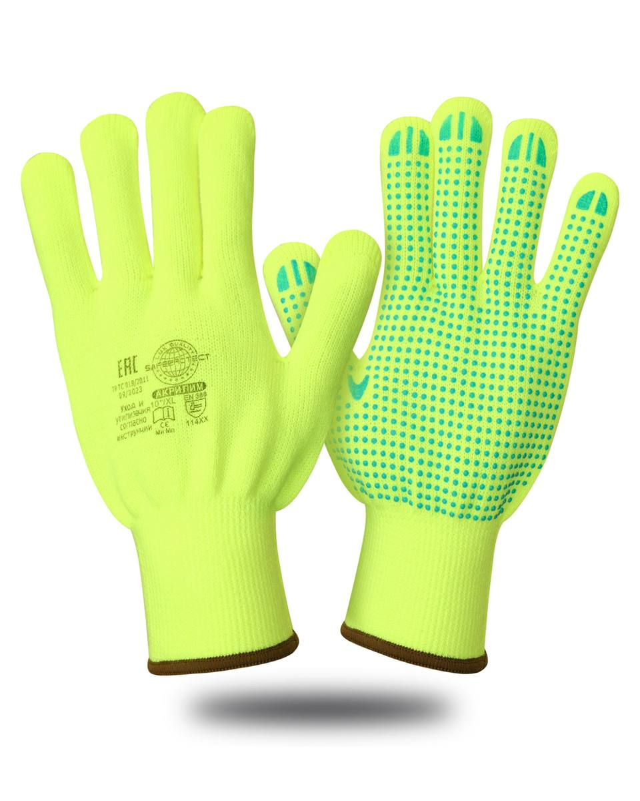
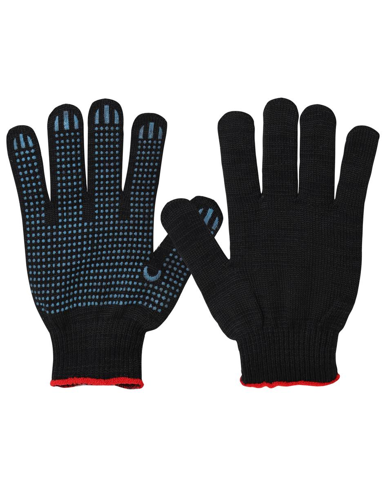
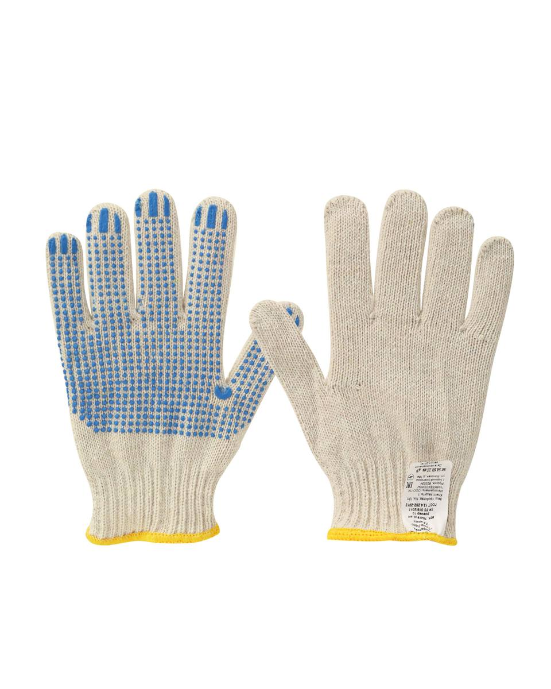
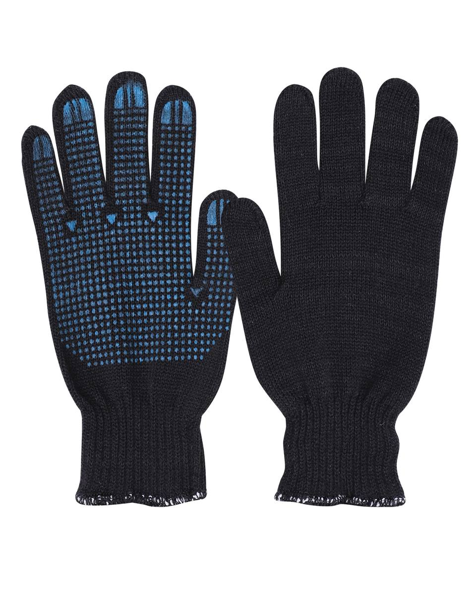

Перчатки «Точка»
Арт. 144811 — Перчатки утепленные АКРИЛИМ Safeprotect® (акрил+ПВХ ) (х12х72)
Перчатки трикотажные черные 7 класс с ПВХ покрытием
Перчатки утепленные АКРИЛИМ Safeprotect® (акрил+ПВХ ) (х12х72)
 Перчатки х/б с ПВХ 10 класс вязки,50 гр., ручной оверлок,кратно 10 пар(х300)
Перчатки х/б с ПВХ 10 класс вязки,50 гр., ручной оверлок,кратно 10 пар(х300)
Перчатки х/б с ПВХ ЧЕРНАЯ 10 класс вязки,50 гр.,ручной оверлок,кратно 10 пар(х300)
Перчатки х/б с ПВХ , 13-й класс, 44 гр.,кратно 10 пар(х300)
Перчатки х/б с ПВХ покрытием 7 класс оверлок двойнойГОСТ 5007-14 ТР-ТС 017/2011
Класс 7, размер 20.
Состав: 40% ПАН, 60% х/б, вес 55 гр.
Пряжа Пан (объемное синтетическое волокно) обладает высокой прочностью, мягкостью, комфортностью, хорошей воздухопроницаемостью. По своим качествам близка к натуральной шерсти. Применяется для производства детской одежды. Полное название пряжи ПАН - полиакрилонитрильные волокна. Это один из самых популярных видов искуственной пряжи. Отличается от других видов ненатуральной пряжи тем, что по своим свойствам стоит очень близко к шерсти, практически не уступая ей. Изделия из пряжи ПАН не "сваливаются", имеют
| Артикул | Вариант / цвет |
|---|---|
| 112993 | Перчатки трикотажные черные 7 класс с ПВХ покрытием |
| 144811 | Перчатки утепленные АКРИЛИМ Safeprotect® (акрил+ПВХ ) (х12х72) |
| 70303 | Перчатки х/б с ПВХ 10 класс вязки,50 гр., ручной оверлок,кратно 10 пар(х300) |
| 107118 | Перчатки х/б с ПВХ ЧЕРНАЯ 10 класс вязки,50 гр.,ручной оверлок,кратно 10 пар(х300) |
| 58552 | Перчатки х/б с ПВХ , 13-й класс, 44 гр.,кратно 10 пар(х300) |
| 112992 | Перчатки х/б с ПВХ покрытием 7 класс оверлок двойной |